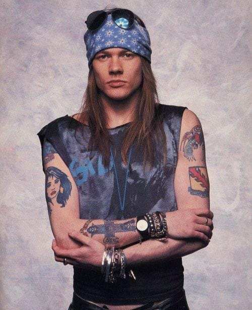

W. Axl Rose (nacido William Bruce Rose Jr. , 6 de febrero de 1962) es un cantante y compositor estadounidense, más conocido como el vocalista principal y letrista de la banda de hard rock Guns N' Roses .
Reconocido por su voz potente y de amplio registro, Rose ha sido clasificado entre los mejores cantantes de todos los tiempos por medios como Rolling Stone , NME y Billboard .
El álbum debut de la banda, Appetite for Destruction (1987), vendió más de 30 millones de copias en todo el mundo y sigue siendo el debut más vendido en Estados Unidos. Las relaciones de Rose con Erin Everly y Stephanie Seymour inspiraron varias canciones, incluyendo el éxito " Sweet Child o' Mine ", aunque las acusaciones de abuso y las letras controvertidas en el siguiente lanzamiento de la banda, G N' R Lies (1988), generaron críticas.